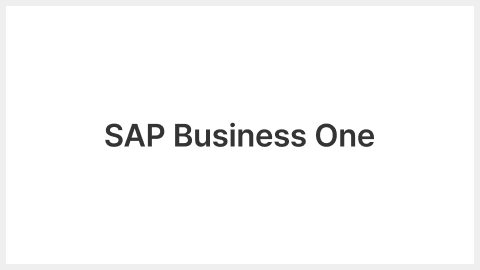

검색결과가 없습니다.

SAP Business One 건설기계 유통 T사 SAP Business One 기반 전사 통합 ERP 구축 건설기계 유통 T사는 구매·영업·재고·서비스·재무 업무를 SAP Business One으로 통합하고, 장비와 부품의 재고 및 A/S 이력을 추적하며 원가와 결산을 체계적으로 관리할 수 있는 전사 운영 기반을 구축했습니다. 건설기계 유통 T사는 구매·영업·재고·서비스·재무 업무를 SAP Business One으로 통합하고, 장비와 부품의 재고 및 A/S 이력을 추적하며 원가와 결산을 체계적으로 관리할 수 있는 전사 운영 기반을 구축했습니다. 2026.05.22. SAP Business One 건설기계 유통 T사 SAP Business One 기반 전사 통합 ERP 구축 건설기계 유통 T사는 구매·영업·재고·서비스·재무 업무를 SAP Business One으로 통합하고, 장비와 부품의 재고 및 A/S 이력을 추적하며 원가와 결산을 체계적으로 관리할 수 있는 전사 운영 기반을 구축했습니다. 2026.05.22.